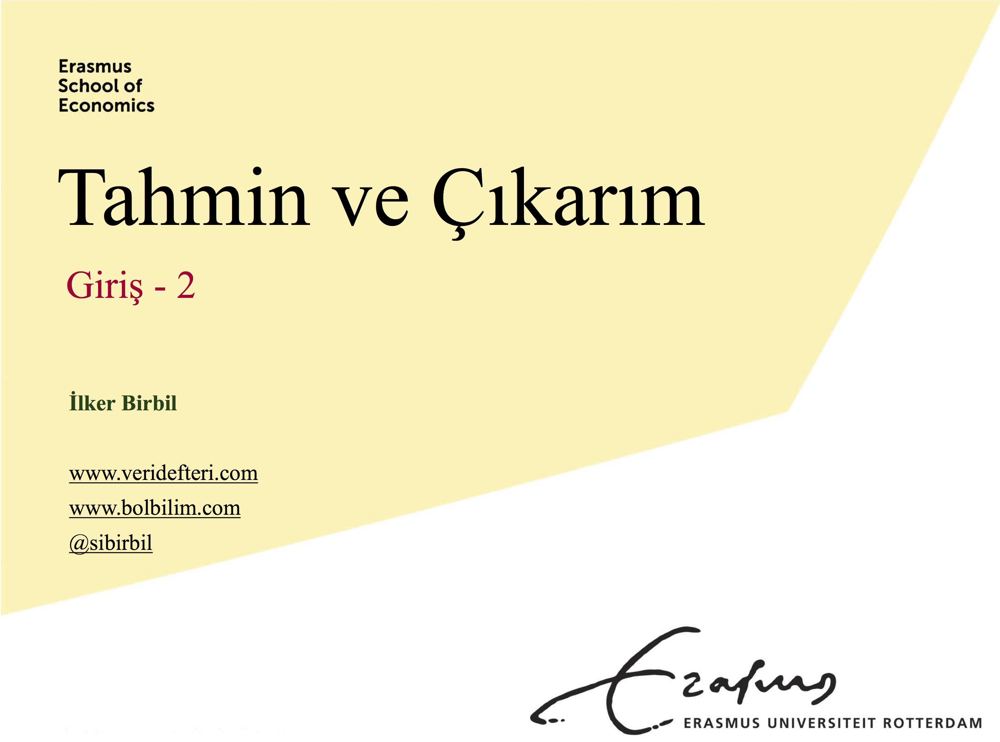

Tahmin ve Çıkarım (Makine Öğrenmesi? Yapay Öğrenme?)
“Yapay Öğrenme” mi, yoksa “Makine Öğrenmesi” mi? Belki de “İstatiksel Öğrenme.” Açıkçası ben de bir türlü karar veremiyorum. Bir bilgisayar mühendisi kadar iddialı değilim; onun için ilk iki seçeneği kullanmak istemedim. İstatistik bilgim idare eder. Fakat doğruya doğru, mektepli istatistikçilerle aşık atamam. Öte yandan önümüzdeki güz döneminde, bizim üniversitede çoğunluğunu optimizasyon ve istatistikçilerin oluşturduğu bir gruba “Machine Learning” isimli bir yüksek lisans dersi vereceğim. Yani öyle ya da böyle, bu derse iyi hazırlanmam gerek. Kaçış yok. Onun için isme fazla takılmasam iyi olacak.
Çalışmaya başladım. Bir yandan da ders notları hazırlıyorum ki konuyu daha iyi anlayayım. Yüksek lisans dersi İngilizce olacak (Hollandaca da anlatabilirim ama pişman olurlar). İşin güzel tarafı, bu tür derslerde kullandığım sunum dosyalarında fazla yazı olmuyor. Ben de madem az metin var, o zaman neden Türkçe olmasın diye düşündüm. Bir yandan da dersleri videoya çekmeyi deneyeceğim. Bu şekilde hem Veri Defteri için farklı bir kaynağımız daha olur, hem de sizden gelen önerilerle notlarım iyileşir.
Aklımdaki konular şunlar:-
Giriş
- Ne yapıyoruz?
- Farklı veri tipleri
- Bağlanım (regression) ve sınıflandırma (classification)
- Güdümlü (supervised) ve güdümsüz (unsupervised) öğrenme
-
Performans Ölçümü
- Eğitim (training) ve test hataları
- Aşırı uyum (overfitting)
- Yanlılık (bias) - Varyans
- Bayes sınıflandırıcısı (classifier) - K-En Yakın Komşu (KEYK)
-
Doğrusal Bağlanım
- Modelin kurulması
- Katsayıların elde edilmesi
- Kategorik değişkenlerin eklenmesi
- KEYK ile karşılaştırma
-
Düzenlileştirme (Regularization)
- Alt küme seçimi
- Çıkıntı (ridge) bağlanımı ve Lasso
- Boyut indirme (dimension reduction)
-
Sınıflandırma
- Lojistik (logistic) Bağlanım
- Doğrusal Ayrımsayıcı Çözümleme (Linear Discriminant Analysis)
- Doğru-yanlış sınıflandırma tabloları
-
Tekrar Örnekleme (Resampling)
- Çapraz geçerlilik sınaması (cross validation)
- Zorlama tekniği (bootstrap technique)
-
Karar Ağaçları (Decison Trees)
- Bağlanım ve sınıflandırma ağaçları
- Rassal Ormanlar (Random Forests)
- Torbalama (bagging) ve takviye (boosting)
-
Gruplandırma (Clustering)
- Ana Bileşenler Analizi (Principal Component Analysis)
- K-Ortalamalar gruplandırma
- Hiyerarşik gruplandırma
- Spektral gruplandırma
-
Destek Vektör Makineleri (Support Vector Machines)
- Ayırıcı düzlemler (separating hyperplanes)
- Destek vektör sınıflandırıcıları (classifiers)
- Çoklu sınıf
-
Yapay Sinir Ağları (Artificial Neural Networks)
- Temel ağ yapısı
- Etkinleştirme (activation) fonksiyonları
- Geri yayılım (backpropagation)
Ta en baştan çok katı bir içeriği garanti etmem oldukça güç elbette. Eminim zaman içinde eklemeler ve çıkarmalar olacaktır. Ancak yine de yukarıdaki konular size bir fikir verir diye tahmin ediyorum. Bu arada içerikten de göreceğiniz üzere sık sık Türkçe teknik terimlere ihtiyacımız olacak. Çeviri için farklı kaynakları düşündüm. En sonunda TÜBA Türkçe Bilim Terimleri Sözlüğü’nü esas almaya karar verdim.
Ders notlarımı hazırlarken mümkün mertebe bir kitaba bağlı kalmayı seviyorum. Bu sayede dersi takip edenlerin, derste işlemediğim veya iyi anlamadıkları konuları kendi başlarına çalışmaları mümkün oluyor. İstatiksel ya da yapay öğrenme konularında yazılmış çok iyi kitaplar var. Bir süre inceledikten sonra şu kitapta karar kıldım:“An Introduction to Statistical Learning – with Applications in R,” G. James, D. Witten, T. Hastie, R. Tibshirani. Yedinci baskı, Springer, New York, 2013.
Kitabın teknik ayrıntıları atlayarak ilerlemesini çok sevdiğimi söyleyemem. Ancak aklımı çelen birkaç yanı var. Öncelikle kitabın dijital kopyasına, kullanılan veri kümelerine ve kodlara ücretsiz olarak erişilebiliyor. Ayrıca kitabın her bölümünün sonunda bilgisayar başında yapılması istenen uygulamalar verilmiş. Kitap R programlama dilini kullanmış ve tüm kodlar aynı sayfada mevcut. Ancak biraz arayınca Python kodlarını da kolayca bulabilirsiniz. Bir diğer sebep de bu kitabı hazırlayanlardan Hastie ve Tibshirani’nin yanlarına J. Friedman’ı alarak yazdıkları bir kitap daha olması. Doğrusu o kitap, benim bayağı beğendiğim bir kaynak. Teknik olarak kesinlikle daha fazla ayrıntıya giriyor. Eğer bu ders için seçtiğim kitaptan hoşlanmazsanız, o kitabı takip edebilirsiniz. Orada benim anlatacağım konular daha derinlemesine inceleniyor. Bu arada unutmadan ekleyeyim. Seçtiğim kitap Yapay Sinir Ağları konusuna girmiyor. O konu için birkaç kitaptan yararlanacağım. Zamanı gelince referansları veririm.
Dersin tamamını takip edebilmek için temel bir istatistik, analiz ve lineer cebir bilgisine ihtiyaç var. Kabaca üniversitenin ilk iki yılında öğretilen konular. Eğer bu konuları daha önce hiç görmediyseniz, yine de dersi takip edebilirsiniz ancak hey ayrıntıya vakıf olmanız maalesef mümkün değil.
Lafı uzatmadan iki bölümden oluşan giriş dersi ile başlayalım. Arkası da zamanla gelir…

Giriş 1

Giriş 2